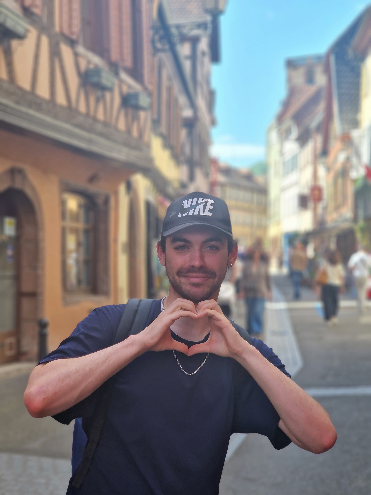
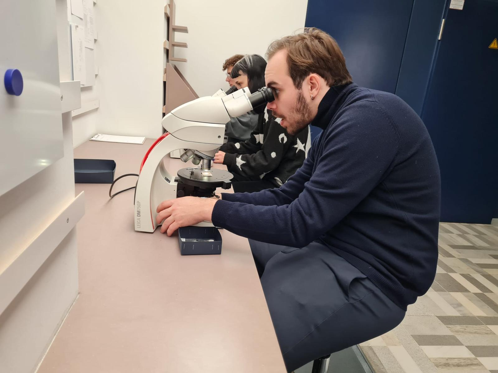
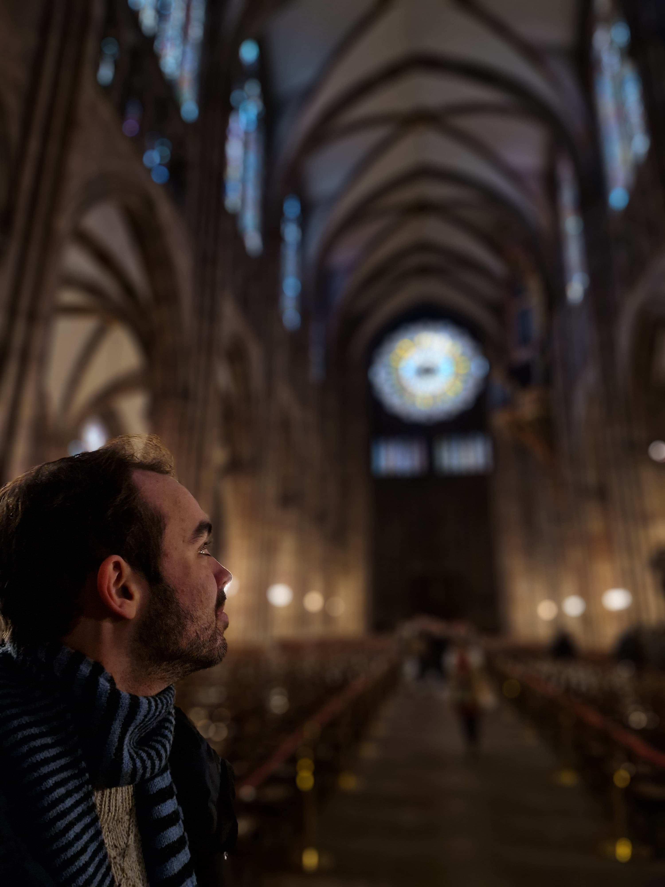
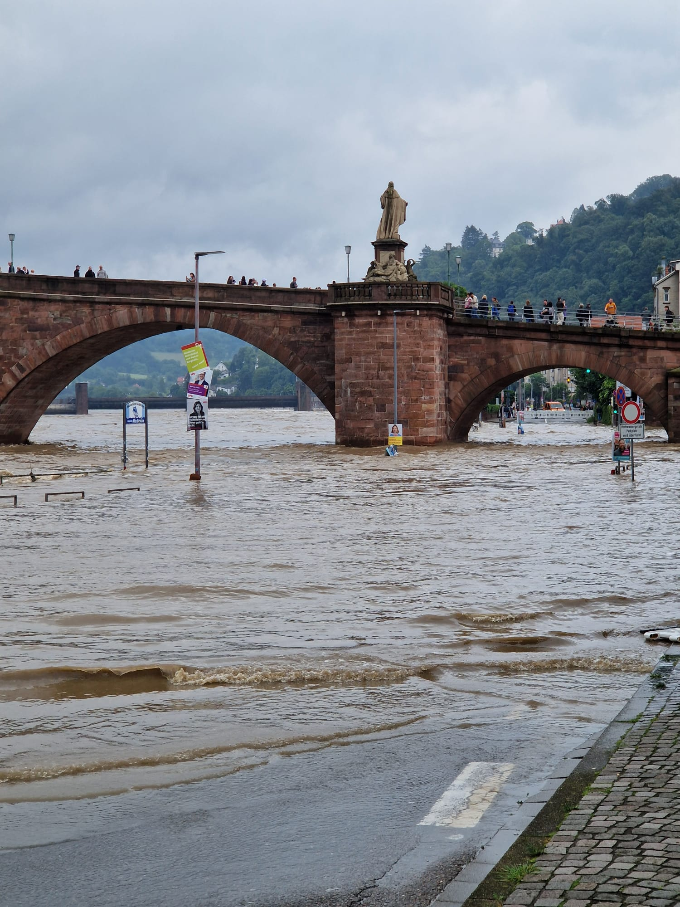

Physics student at the University of Heidelberg, researching theoretical biophysics and exploring the fascinating intersection of mathematics, computation, and life sciences.
Get to know my personal side
Welcome to my website! I'm Johannes, a physics student at the University of Heidelberg, Germany. I was born on January 18th, 2001 in Düsseldorf, and after completing my Abitur in 2019, I moved to Heidelberg to study physics.
During my bachelor studies, I had the wonderful opportunity to spend a semester at the University of Leiden in the Netherlands. I got to meet wonderful people, explore the Dutch culture and the "nice" weather. I also learned a new side of physics at the intersection to the physics of finance, which opened my eyes to the diverse applications of physical principles. I have recently finished my studies with my Master degree in physics and am currently looking for a PhD position in theoretical and computational biophysics. Let's see where this journey takes me.
Outside of academia I like sports like the classics (soccer). However, I've recently discovered ultimate frisbee, which I absolutely love. I'm a dog person (though I like cats too!), and I'm deeply invested in the Game of Thrones books. While waiting for the elusive 6th book, I've been making my way through the Wheel of Time series. However, the new "A Knight of the Seven Kingdoms" show is also quite nice!
This website is my corner of the internet where I share my academic work, research interests, personal adventures, and thoughts on topics I find fascinating. Feel free to explore and don't hesitate to reach out!
My academic journey and research work
I completed my bachelor's degree in physics in 2023, writing my thesis under the supervision of Prof. Dr. Andreas Mielke on pattern formation in lipid membranes. The research tackled a fascinating question: "Why is everything we see in nature so sharp?" Think of zebra stripes - why aren't they a blurry mess?
In my thesis, I explored how patterns emerge in cell membranes through nonlinear feedback suppression, similar to how a single chant can take over an entire stadium. It's a mechanism where competing patterns actively suppress each other until one dominant pattern emerges.
From November 2024 until December 2025 I worked on my master thesis in the group of Prof. Dr. Ulrich Schwarz shared between the Institute for Theoretical Physics and the BioQuant in Heidelberg. The thesis focused on how cells wrap around things they want to "eat". It does so by creating a layer of proteins (called clathrin) on its surface which assists in the bending. For this project, I developed simulation software using JAX (typically used for machine learning) combined with Python's object-oriented programming. This approach allowed me to create fast, efficient simulations while maintaining clean, manageable code. It was an exciting blend of computational physics, biophysics, and software engineering.
We were able to show that the protein coat becomes "stronger" while it grows which helps it to bend the membrane. The protein coat has usually a very symmetric structure (hexagonal). We could also show that the coat can bend the membrane a bit and then "lock" this curvature in by creating a "defect" (a pentagon) in its structure. This is a bit like how you can create a cone by cutting out a slice of paper and then gluing the edges together. The cut creates a "defect" in the otherwise flat sheet, allowing it to bend into a cone shape.
I'm currently employed in the Schwarz group to further refine the findings of my master thesis. In an ideal world we would like to publish the results before I start my PhD. But let's see how that goes!
Pattern Formation in Lipid Membranes (2023)
Curvature Generation in Clathrin-Mediated Endocytosis (2024-2025)
Some snapshots from my life and travels




Sharing ideas and reflections on science, life, and everything in between
This is the beginning of my writing journey. I plan to share thoughts on physics, research, books I'm reading, and interesting things I come across. Stay tuned for more!
Read more →Let's connect and have a conversation
{kind=link}
{kind=link}